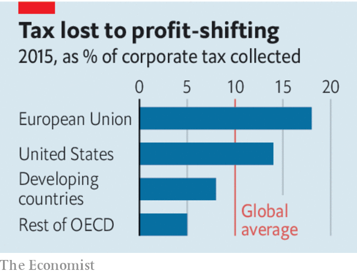
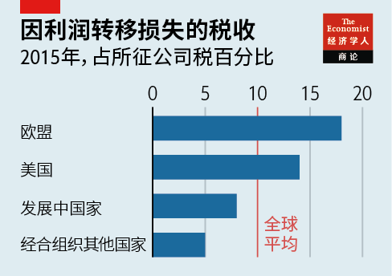

2021-06-20T16:13:19+00:00
A new architecture
【首文】新架构
【首文】新架構
A less loophole-riddled system for taxing companies is within reach
不那么漏洞百出的企业税体系指日可待
不那麼漏洞百出的企業稅體系指日可待
But governments should not expect a gusher of extra revenue
但各国政府不能指望就此增加大笔收入
但各國政府不能指望就此增加大筆收入
WHEN PEOPLE come to look back on Joe Biden’s presidency, they may, depending on events in the coming months, conclude that one of his most consequential economic achievements was to reverse a decades-long global boom in corporate tax-dodging. His administration’s call for an end to the “race to the bottom” has reinvigorated multilateral talks on rewriting international rules that encourage multinationals to funnel vast profits to tax havens. Two months after that call, America and other rich countries have agreed on a road map for reform. The deal paves the way for the biggest corporate-tax overhaul in a century.
未来人们回顾拜登的总统任期时，可能会认为他最重要的经济成就之一是逆转了在全球盛行了数十年的企业避税潮——当然这还要看未来几个月事情的发展。拜登政府呼吁停止“逐底竞争”，这推动了各界重启多边谈判，商讨改写那些促使跨国公司把大量利润输送到避税天堂的规则。呼吁发出后两个月，美国和其他富裕国家已就改革路线达成共识。这将为一个世纪以来最大规模的企业税改革铺平道路。
未來人們回顧拜登的總統任期時，可能會認為他最重要的經濟成就之一是逆轉了在全球盛行了數十年的企業避稅潮——當然這還要看未來幾個月事情的發展。拜登政府呼籲停止“逐底競爭”，這推動了各界重啟多邊談判，商討改寫那些促使跨國公司把大量利潤輸送到避稅天堂的規則。呼籲發出後兩個月，美國和其他富裕國家已就改革路線達成共識。這將為一個世紀以來最大規模的企業稅改革鋪平道路。
Mr Biden’s motives are not pure: he is driven less by principle than a desire to squeeze more out of American firms to finance his post-pandemic spending priorities. Nevertheless, the G7 countries’ proposals, which their finance ministers approved on June 5th, are welcome. The international tax system sits on foundations laid in the 1920s. For much of the following century policymakers’ concern was to avoid double taxation, not curb abuse. The result has been a steady rise in avoidance, further fuelled by the growth of tech firms and intangible assets, to the point where 40% of multinationals’ overseas profits are shifted to havens. The OECD estimates this costs exchequers up to $240bn a year—a tiny fraction of global economic output, but still a lot of unbuilt hospitals and unfixed roads.
拜登的动机并不单纯：他主要考虑的不是原则问题，而是要从美国企业身上榨出更多资金来支撑他的疫情后重大开支项目。但不管怎么说，七国集团的财长已在6月5日通过的改革方案是件好事。现行国际税收体系的基础是在上世纪20年代奠定的，之后一个世纪的大部分时间里，政策制定者关注的都是如何避免双重征税，而非防止滥用税收漏洞。结果是避税行为日渐增加，科技公司崛起和无形资产扩大更加剧了这种操作，跨国公司甚至已经把40%的海外利润都转移到了避税天堂。据经合组织估计，各国国库因此遭受的财政收入损失高达每年2400亿美元，虽然这只是全球经济产出的一小部分，但也足够建设许多医院和修很多路了。
拜登的動機並不單純：他主要考慮的不是原則問題，而是要從美國企業身上榨出更多資金來支撐他的疫情後重大開支項目。但不管怎麼說，七國集團的財長已在6月5日通過的改革方案是件好事。現行國際稅收體系的基礎是在上世紀20年代奠定的，之後一個世紀的大部分時間裡，政策制定者關注的都是如何避免雙重徵稅，而非防止濫用稅收漏洞。結果是避稅行為日漸增加，科技公司崛起和無形資產擴大更加劇了這種操作，跨國公司甚至已經把40%的海外利潤都轉移到了避稅天堂。據經合組織估計，各國國庫因此遭受的財政收入損失高達每年2400億美元，雖然這只是全球經濟產出的一小部分，但也足夠建設許多醫院和修很多路了。
Past attempts to plug this hole have been piecemeal. The G7 wants a more comprehensive fix. It has backed a global minimum corporate-tax rate of at least 15%, combined with a reallocation of taxing rights to give more to countries where firms have sales. Rishi Sunak, Britain’s chancellor, who chaired the G7 talks, called its accord “seismic”.
以往尝试堵住这个漏洞的努力七零八落。七国集团想要一个更全面的解决方案。它支持全球推行至少15%的最低企业税，同时重新分配征税权，让作为公司销售市场的国家拥有更多权利。主持七国集团会谈的英国财政大臣里希·苏纳克（Rishi Sunak）称该协议是“震撼性的”。
以往嘗試堵住這個漏洞的努力七零八落。七國集團想要一個更全面的解決方案。它支持全球推行至少15%的最低企業稅，同時重新分配徵稅權，讓作為公司銷售市場的國家擁有更多權利。主持七國集團會談的英國財政大臣里希·蘇納克（Rishi Sunak）稱該協議是“震撼性的”。
In fact it is only a first step. Reaching a global deal involves finding terms that 132 other countries, including China and India, can accept. Poor countries fear a rich-country stitch-up: the G7 could reap over 60% of the revenue gains from a minimum tax. Some havens will resist, including Ireland, which jealously guards its 12.5% corporate-tax rate—and has a veto on tax matters in the EU.
实际上这只是第一步。要达成全球性的协议，就要制定出包括中国和印度在内的另外132个国家都能接受的条款。贫穷国家害怕富裕国家会操纵局面：在实行最低税率带来的收入增长中，七国集团国家可能拿走其中的六成以上。一些避税天堂将抵制协议，包括警觉地维护着自己12.5%企业税的爱尔兰，而且该国在欧盟税收问题上拥有否决权。
實際上這只是第一步。要達成全球性的協議，就要制定出包括中國和印度在內的另外132個國家都能接受的條款。貧窮國家害怕富裕國家會操縱局面：在實行最低稅率帶來的收入增長中，七國集團國家可能拿走其中的六成以上。一些避稅天堂將抵制協議，包括警覺地維護着自己12.5%企業稅的愛爾蘭，而且該國在歐盟稅收問題上擁有否決權。
If these obstacles can be overcome, the reforms will still need to be passed into law. Many in America’s Congress worry that they may hurt its companies’ competitiveness. European countries want America to move first. America wants France, Britain and other countries that have introduced “digital-services taxes”, targeting the sales of Silicon Valley firms, to scrap them immediately. Agreeing to put them on hold would help move the delicate diplomacy forward. Europe’s levies have provoked retaliatory tariffs from America, which are currently suspended. The OECD reckons a tax-induced trade war would wipe more than 1% off global GDP.
就算能克服这些障碍，改革措施仍需通过立法。美国许多国会议员担心这些改革可能损害美国公司的竞争力。欧洲国家希望美国率先行动。美国则希望法国、英国等国立即撤销它们针对硅谷公司的销售开征的“数字服务税”。同意暂停这些税收将有助于改善微妙的外交关系。欧洲的征税已经引来了美国的报复性关税（目前已暂停）。经合组织估计，由征税问题引发的贸易战可能使全球GDP减少超过1%。
就算能克服這些障礙，改革措施仍需通過立法。美國許多國會議員擔心這些改革可能損害美國公司的競爭力。歐洲國家希望美國率先行動。美國則希望法國、英國等國立即撤銷它們針對硅谷公司的銷售開徵的“數字服務稅”。同意暫停這些稅收將有助於改善微妙的外交關係。歐洲的徵稅已經引來了美國的報復性關稅（目前已暫停）。經合組織估計，由徵稅問題引發的貿易戰可能使全球GDP減少超過1%。
Expectations also need tempering on how much of the revenue lost to avoidance will be clawed back. Most would come from the minimum tax. But a floor of 15% would raise global corporate-tax revenues by as little as 2.7%. The $50bn-80bn that the combined reforms might raise is meagre beside multinationals’ $6trn of global annual profits. The profit-reallocation part of the proposals looks like a lot of work for not much gain. Countries where an as-yet-undefined group of multinationals have sales would get to share taxing rights over at least 20% of any global profits those firms made above a 10% margin. The net gain from this fiddly exercise may not amount to much more than $10bn.
至于改革能追回多少因企业避税流失的收入，期望值同样需要调整。追回的收入将主要来自推行最低税率。但15%的最低税率也只能让全球企业税收入仅仅增加2.7%。与跨国公司六万亿美元的全球年利润相比，改革措施全部加起来可能带来的额外500亿至800亿美元收入微不足道。方案中有关利润再分配的安排看起来会事倍功半。针对一批尚未被明确定义的跨国公司，其销售所在国将可对其全球利润中超过10%的部分的至少20%征税。这项繁琐的计算带来的净收益可能也就略超过100亿美元。
至於改革能追回多少因企業避稅流失的收入，期望值同樣需要調整。追回的收入將主要來自推行最低稅率。但15%的最低稅率也只能讓全球企業稅收入僅僅增加2.7%。與跨國公司六萬億美元的全球年利潤相比，改革措施全部加起來可能帶來的額外500億至800億美元收入微不足道。方案中有關利潤再分配的安排看起來會事倍功半。針對一批尚未被明確定義的跨國公司，其銷售所在國將可對其全球利潤中超過10%的部分的至少20%徵稅。這項繁瑣的計算帶來的凈收益可能也就略超過100億美元。
No going back
没有回头路
沒有回頭路
Nonetheless, a Rubicon has been crossed. The tenor of the debate on tax began to change after the global financial crisis and has now shifted fundamentally. Governments around the world agree that corporate-tax arbitrage has got out of hand and taxing rights must be better aligned with economic activity. Twenty years ago champions of tax competition had the upper hand. Now the dominant line of thinking is that tax sovereignty cuts both ways: countries have the right to set their own rates, but those undercut by low-tax jurisdictions also have the right to stop the plunder. Before the year is out, a majority of the world’s governments may have agreed on changes that could obliterate the business models of zero-tax havens in the Caribbean.
然而，开弓没有回头箭。征税讨论的基调在全球金融危机后开始变化，现在已彻底转向。各国政府一致认为，企业税套利已经失控，征税权必须与经济活动相匹配。20年前，支持税率竞争的声音占了上风。而现在的主流思路是税收主权是双向的：国家有权制定自己的税率，但被低税率地区抢走收入的国家也有权出手阻止。今年年底前，全球大多数政府也许已能达成一些改革协议，让加勒比地区的零税率避税天堂商业模式消失。
然而，開弓沒有回頭箭。徵稅討論的基調在全球金融危機後開始變化，現在已徹底轉向。各國政府一致認為，企業稅套利已經失控，徵稅權必須與經濟活動相匹配。20年前，支持稅率競爭的聲音佔了上風。而現在的主流思路是稅收主權是雙向的：國家有權制定自己的稅率，但被低稅率地區搶走收入的國家也有權出手阻止。今年年底前，全球大多數政府也許已能達成一些改革協議，讓加勒比地區的零稅率避稅天堂商業模式消失。
Any deal emerging from the global talks would be far from perfect. It would raise only modest sums relative to covid-induced holes in budgets. It would curb, but not end, the use of loopholes; corporate tax departments are too clever for that. It is likely to give more to advanced economies than developing ones, meaning there will be pressure to revisit the deal. But it promises to reveal a route to a more rational, equitable tax system that is fit for an economy based on things you tap on a keyboard rather than drop on your foot. That is the destination negotiators need to keep in mind in the taxing months ahead. ■
从这轮全球谈判中得出的任何协议都远谈不上完美。相对于疫情造成的预算缺口，它带来的额外收入会很有限。钻税务漏洞的行为将被抑制，但不会就此终结，毕竟企业税务部门都精于此道。由于获益更多的更可能是发达经济体而非发展中国家，将会有修改协议的压力。但它有望打开一条路，通往一个更合理公平的税收制度，适应一种基于键盘而非实物的经济。在未来几个月繁重的协商中，谈判代表们需要牢记这个目标。
從這輪全球談判中得出的任何協議都遠談不上完美。相對於疫情造成的預算缺口，它帶來的額外收入會很有限。鑽稅務漏洞的行為將被抑制，但不會就此終結，畢竟企業稅務部門都精於此道。由於獲益更多的更可能是發達經濟體而非發展中國家，將會有修改協議的壓力。但它有望打開一條路，通往一個更合理公平的稅收制度，適應一種基於鍵盤而非實物的經濟。在未來幾個月繁重的協商中，談判代表們需要牢記這個目標。